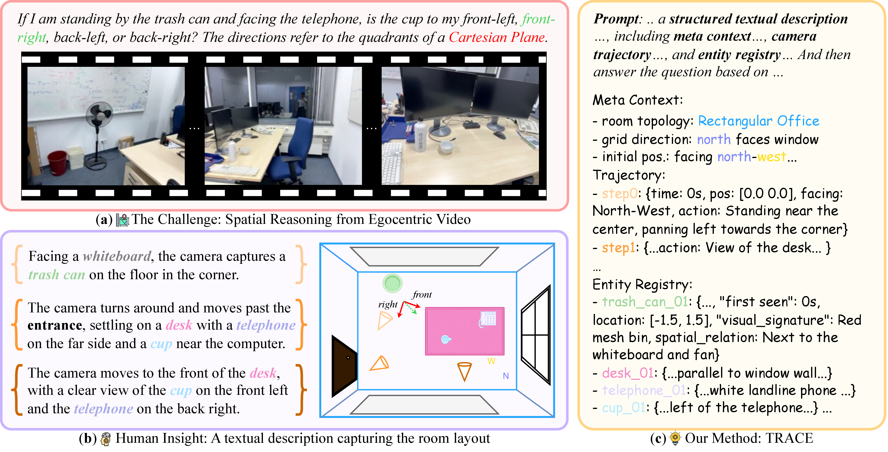
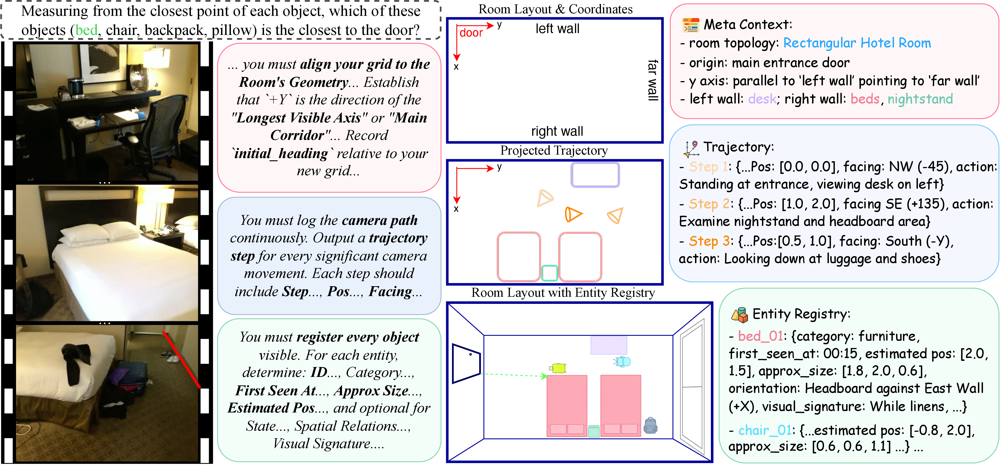
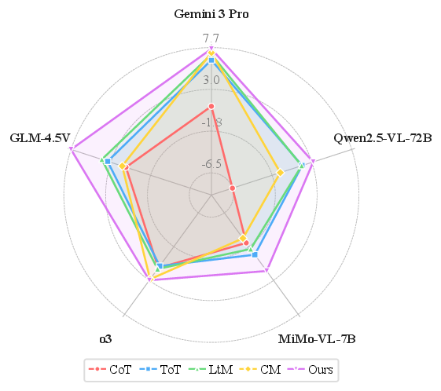
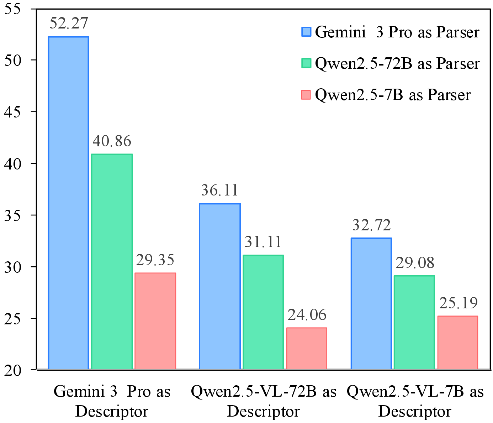

Existing MLLMs often fail to build coherent 3D abstractions from egocentric video.
TRACE = Textual Representation of Allocentric Context from Egocentric Video
Unleashing Spatial Reasoning in Multimodal Large Language Models via Textual Representation Guided Reasoning
TRACE gives multimodal models a structured allocentric trace to reason over, rather than forcing 3D spatial understanding to emerge implicitly from raw egocentric video.
Abstract
Existing Multimodal Large Language Models (MLLMs) struggle with 3D spatial reasoning because they fail to construct structured abstractions of the environment depicted in video. TRACE introduces a prompting method that elicits a text-based allocentric representation of the scene as an intermediate reasoning trace, encoding meta-context, camera trajectories, and grounded object entities before spatial question answering. Experiments on VSI-Bench and OST-Bench show consistent gains over prior prompting strategies across diverse MLLM backbones, while ablations and detailed analyses reveal the remaining bottlenecks of 3D spatial reasoning in MLLMs.

TRACE builds a room-level textual representation before answer generation, making spatial reasoning explicit rather than implicit.
It replaces loose reasoning text with a structured spatial interface that models can query.
Performance improves across proprietary and open backbones on both VSI-Bench and OST-Bench.
Overview
Text as a Spatial Interface
TRACE turns egocentric video into a structured allocentric trace that multimodal models can actually reason over.
Existing MLLMs often fail to maintain a stable 3D world model from egocentric video, so spatial reasoning remains brittle and implicit.
TRACE elicits an intermediate text representation that explicitly records room topology, camera motion, and grounded entities.
The resulting spatial cache supports routing, measurement, order, and relational reasoning, while improving performance on both VSI-Bench and OST-Bench.
Method
How TRACE Structures Reasoning

TRACE first constructs a schema-compliant spatial trace, then conditions answer generation on that trace and the original video.
Spatial Descriptor
The model observes egocentric video and emits structured allocentric text instead of unconstrained rationale.
Structured Spatial Cache
Layout, movement, and grounded objects are stored in a form the model can revisit during inference.
Reasoning Parser
Final answers are generated by reasoning over both the video and the previously constructed trace.
Results
Consistent Gains Across Models and Settings
Gemini 3 Pro
+7.54
Absolute gain over Direct prompting.
Qwen2.5-VL-72B
+3.10
Open-weight performance also improves under the same setup.
MiMo-VL-7B
+1.63
Compact models benefit from explicit geometric grounding.
Gemini 3 Pro
+1.20
TRACE remains effective in multi-turn embodied scene understanding.
MiMo-VL-7B
+2.39
The strongest uplift appears on the compact open-source model.
-5.24 without Entity Registry
-1.92 without Trajectory
Entity grounding contributes the largest effect.
Reading the results
- TRACE consistently outperforms prior prompting strategies on VSI-Bench.
- One-stage prompting is stronger than two-stage inference for both Gemini and Qwen.
- Text-only inference stays competitive, showing TRACE is already a strong video summary.
- Cross-environment gains remain stable across ARKitScenes, ScanNet, and ScanNetPP.

TRACE yields consistent improvements across multiple MLLM backbones.

Descriptor quality remains a key bottleneck in current spatial reasoning pipelines.
Figure Gallery
Core Visuals from the Paper
Citation & Resources
Use TRACE in Your Work
TRACE is a prompting interface for structured 3D spatial reasoning with off-the-shelf multimodal large language models.
Jiacheng Hua, Yishu Yin, Yuhang Wu, Tai Wang, Yifei Huang, and Miao Liu. 2026. Unleashing Spatial Reasoning in Multimodal Large Language Models via Textual Representation Guided Reasoning. In Proceedings of the 64th Annual Meeting of the Association for Computational Linguistics (Volume 1: Long Papers), San Diego, California, USA. Association for Computational Linguistics.
BibTeX
@inproceedings{hua-etal-2026-unleashing,
title = {Unleashing Spatial Reasoning in Multimodal Large Language Models via Textual Representation Guided Reasoning},
author = {Hua, Jiacheng and Yin, Yishu and Wu, Yuhang and Wang, Tai and Huang, Yifei and Liu, Miao},
booktitle = {Proceedings of the 64th Annual Meeting of the Association for Computational Linguistics (Volume 1: Long Papers)},
month = jul,
year = {2026},
address = {San Diego, California, USA},
publisher = {Association for Computational Linguistics},
note = {To appear}
}@misc{hua2026unleashingspatialreasoningmultimodal,
title={Unleashing Spatial Reasoning in Multimodal Large Language Models via Textual Representation Guided Reasoning},
author={Jiacheng Hua and Yishu Yin and Yuhang Wu and Tai Wang and Yifei Huang and Miao Liu},
year={2026},
eprint={2603.23404},
archivePrefix={arXiv},
primaryClass={cs.CV},
url={https://arxiv.org/abs/2603.23404},
}